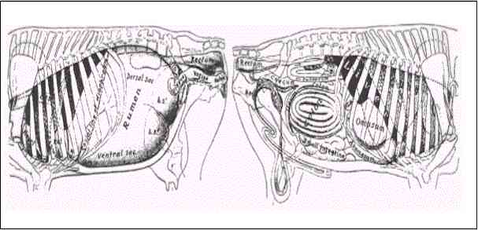

El tracto digestivo especializado de animales rumiantes asemeja a la de los animales monogástricos, con la excepción del estómago característica. El estómago de los rumiantes tiene cuatro compartimentos: el rumen, retículo, omaso y abomaso, como se muestra en el siguiente diagrama. Colectivamente, estos órganos ocupan casi 3 / 4ths de la cavidad abdominal, llenando casi todo el lado izquierdo y que se extiende de manera significativa en la derecha. El retículo se encuentra contra el diafragma y se une al rumen por un pliegue de tejido.
